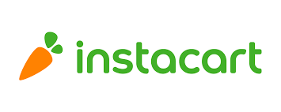
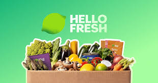
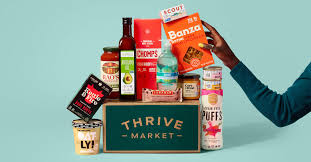

Top 5 Grocery Delivery Services in 2025
Grocery delivery has gone from a luxury to a genuine money-saver — if you pick the right service. The wrong one can quietly cost you hundreds of dollars a year in markups, service fees, and subscriptions you don't fully use. This guide breaks down the top 5 options in 2025 so you can choose the one that actually fits your budget and lifestyle.
Quick Comparison
| Service | Monthly Cost | Item Markup | Store Selection | Best For |
|---|---|---|---|---|
| Instacart+ | $9.99/mo | ~15–20% | 1,400+ stores | Multi-store shoppers |
| HelloFresh | ~$8–12/serving | N/A (meal kits) | HelloFresh only | Meal planning beginners |
| Walmart+ | $12.95/mo | None | Walmart only | Walmart regulars |
| Amazon Fresh | Included with Prime ($14.99/mo) | Low–none | Amazon + Whole Foods | Prime members |
| Thrive Market | $12/mo (or $60/yr billed annually) | 25–50% below retail | Thrive Market only | Organic/natural buyers |

1. Instacart
Instacart is the most flexible grocery delivery service available — you can order from over 1,400 stores including Costco, Aldi, Kroger, Publix, and Whole Foods all in one app. The Instacart+ membership ($9.99/month) removes delivery fees on orders over $35 and includes a free Peacock subscription.
The trade-off is a 15–20% markup on item prices compared to what you'd pay in-store. On a $200 grocery order that's an extra $30–40 every time. If you shop frequently, that adds up fast — so Instacart works best when convenience is the priority or when you're accessing stores that aren't near you.
✅ Pros
- Widest store selection
- Easy multi-store ordering
- Often has promo codes for new users
❌ Cons
- Item prices marked up 15–20%
- 5% service fee on top
- Shopper quality varies

2. HelloFresh
HelloFresh isn't a traditional grocery delivery service — it's a meal kit service that sends pre-portioned ingredients with step-by-step recipes. Plans start around $8–12 per serving depending on how many meals and people you choose. It's not the cheapest way to eat, but it dramatically reduces food waste and takes the guesswork out of meal planning.
New subscribers typically get their first box heavily discounted (sometimes 60% off), which makes it a low-risk way to try it out. If you find yourself throwing away produce regularly or spending too much on takeout because you don't know what to cook, HelloFresh can actually save you money overall.
✅ Pros
- Reduces food waste significantly
- No meal planning required
- Great intro discount for new users
❌ Cons
- More expensive than cooking from scratch
- Portions can be small
- Requires cooking — not ready-made
3. Walmart+
Walmart+ is the best value membership for everyday grocery shoppers who already buy from Walmart. At $12.95/month (or $98/year), it offers free same-day delivery on orders over $35 with zero item markups — you pay exactly what you'd pay in-store. That alone sets it apart from most competitors.
The membership also includes fuel discounts at Walmart and Murphy gas stations, a free Paramount+ subscription, and Rx savings on prescriptions. For a family doing a weekly Walmart run, the subscription pays for itself quickly.
✅ Pros
- No item price markup
- Fuel discounts + Paramount+ included
- Same-day delivery available
❌ Cons
- Walmart stores only
- Limited organic/specialty selection
- Substitutions can be hit or miss
4. Amazon Fresh
Amazon Fresh is included with an Amazon Prime membership ($14.99/month or $139/year), making it a great option if you're already a Prime subscriber. You can order from Amazon's own grocery inventory as well as Whole Foods, with free delivery on orders over $35 in most areas.
Prices are generally competitive with in-store, especially on Amazon's own brands. The selection is strong for pantry staples, snacks, and household items. If you regularly order from Amazon anyway, Fresh is essentially a free add-on that makes your membership even more valuable.
✅ Pros
- Free with existing Prime membership
- Access to Whole Foods delivery
- Competitive pricing on staples
❌ Cons
- Requires Prime membership
- Not available in all areas
- Fresh produce quality can vary

5. Thrive Market
Thrive Market is the hidden gem on this list for health-conscious shoppers. It's a membership-based online store ($12/month or $60/year) that sells organic, non-GMO, and specialty foods at 25–50% below typical retail prices. Think Costco meets Whole Foods, but online.
The savings are real — members report saving an average of $32 per order compared to buying the same items at a health food store. It works best as a supplement to your regular grocery shopping: stock up on pantry staples, snacks, supplements, and cleaning products through Thrive, then buy fresh produce locally.
✅ Pros
- 25–50% below health food store prices
- Huge organic and specialty selection
- Free gift with first order for new members
❌ Cons
- No fresh produce or perishables
- Annual membership required for best value
- Shipping takes 1–3 days (not same-day)
Which One Should You Choose?
Best overall value: Walmart+ — no markups, useful perks, and a free trial.
Best for Prime members: Amazon Fresh — it's essentially free if you already pay for Prime.
Best for organic shoppers: Thrive Market — the savings on specialty items are hard to beat.
Best for flexibility: Instacart+ — worth it if you shop across multiple stores regularly.
Best for meal planning: HelloFresh — reduces food waste and takes the stress out of weeknight cooking.